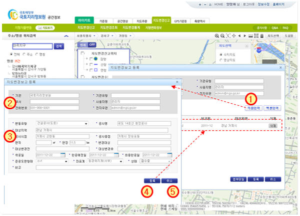

지형지물변동 > 지도변경신고 > 기관신고 >직접입력
| ① | 지도변경보고 등록 창에서 [직접입력] 버튼을 클릭하면 지도변경보고등록 창이 나타난다 |
| ② | 로그인 한 사용자의 정보가 보여진다.(기관사용자 정보 표시) |
| ③ | 기관신고 공사정보의 내용을 입력한다. |
| - 변동유형이 도로, 하천, 철도공사의 경우 공사시점과 종점을 반드시 입력해야 한다. | |
| ※ 공사시점과 종점은 지번주소 또는 도로명주소로 입력한다. | |
| - 변동유형이 택지, 산업, 항만, 수자원, 공항, 매립, 관광, 특정, 체육, 폐기물, 주기의 경우 | |
| 대상지역을 반드시 입력해야 한다. | |
| ※ 대상지역은 지번주소 또는 도로명주소로 입력한다. | |
| ④ | [등록] : 입력한 내용을 저장하고 신규등록 창으로 돌아간다.(15페이지 참조) |
| ⑤ | [취소] : 지도변경보고 등록 창을 종료하고 신규등록 창으로 돌아간다.(15페이지 참조) |